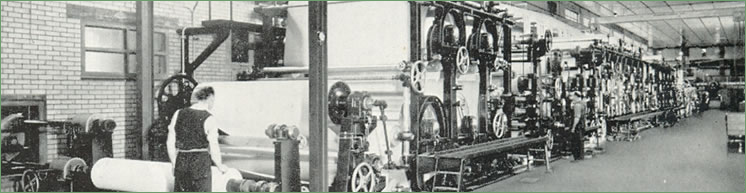
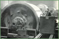
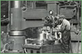
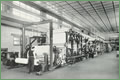

Bertrams
 |
{kind=link}
  Bertrams BertramsBertrams Ltd, Sciennes was founded in 1821 in Edinburgh and developed into a major manufacturer of papermaking machinery with exports going to every part of the world. |
{kind=link}
  The firm was founded by George and William Bertram who were born at Harper’s Brae, close by Eskmills, Penicuik.“Papermaking and the building of papermaking machinery was in the Bertram brother’s blood. They were of a solid Scottish line of fine workmen, their grandfather having been a mechanic at the old Esk Mills Penicuik…. while their father was both papermaker and engineer in the Springfield Mill at Polton.” |
{kind=link}
Their younger brother James founded James Bertram and Son Ltd, Leith Walk, Edinburgh. While there was friendly rivalry between them, the two companies signed a mutual co-operation agreement and both went on to sell papermaking machinery in different parts of the world. The brothers were trained at the works of John Hall at Dartford, at that time a Mecca in Britain for ambitious paper mill engineers. It was there that the brilliant and practical Bryan Donkin was trained, the man largely responsible for the refinement and development of the basic idea of Louis Robert, which was later adopted by the brothers Fourdrinier…. a machine for manufacturing paper in a continuous web instead of small individual hand made sheets. However this was not the first type of papermaking machine to be built in Scotland. “In 1821, my grandfather George Bertram, who was then manager under Mr. Cameron, erected a Machine under a Patent of Mr. Cameron’s, whereby Paper was made by Machinery, so as to be or place the Mills independent of the Vat Men.” Report by William Bertram in 1890 The machine described above was known as the ‘Wooden Man’ and predated the first Fourdrinier machine in Scotland by 6 years. Bertrams went onto design and patent the drying cylinder system for the Fourdrinier machine. “The success of this was so manifest, that the firm then of Wm. & Geo. Bertram got the cream of & against all comers, for the Making of Drying Machines & Paper Making Machines, which St. Katherines Works - Holds now.” |


Penicuik Historical Society :: Penicuik Town Hall :: 33 High Street :: Penicuik :: EH26 8HS
e-mail :: info@penicuikpapermaking.org
e-mail :: info@penicuikpapermaking.org
© Penicuik Historical Society :: site by Wallace Web Design